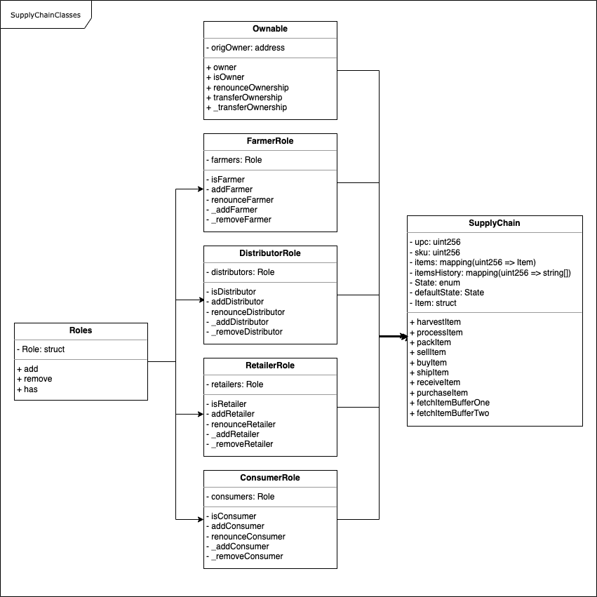

This repository contains an Ethereum DApp that demonstrates a Supply Chain flow between a Seller and Buyer. The user story is similar to any commonly used supply chain process. A Seller can add items to the inventory system stored in the blockchain. A Buyer can purchase such items from the inventory system. Additionally a Seller can mark an item as Shipped, and similarly a Buyer can mark an item as Received.
The contracts were deployed to rinkeby, see the logging at the bottom. The SupplyChain contract can be found on rinkeby.etherscan
There are different accounts involved. Through the public mnemonic, the accounts can be accessed. The private keys are as follows:
Owner: 9137dc4de37d28802ff9e5ee3fe982f1ca2e5faa52f54a00a6023f546b23e779
Farmer:
18911376efeff48444d1323178bc9f5319686b754845e53eb1b777e08949ee9b
Distributor:
f948c5bb8b54d25b2060b5b19967f50f07dc388d6a5dada56e5904561e19f08b
Retailer:
fad19151620a352ab90e5f9c9f4282e89e1fe32e070f2c618e7bc9f6d0d236fb
Consumer: 19d1242b0a3f09e1787d7868a4ec7613ac4e85746e95e447797ce36962c7f68b
The DApp User Interface looks like this:




Using network 'rinkeby'.
Running migration: 1_initial_migration.js
Deploying Migrations...
... 0xd371dd184a815c5e30b3f1021d620805ebc8061caf0c3b04b167bfba58cf7777
Migrations: 0xd4cf81f0d9c091fae545e9f27e67f230b6dc01c7
Saving successful migration to network...
... 0x2a4b80266df29e2423af25c4f0c6c9c69b4db7bd5e8bc0fdc8161e44676b4cb5
Saving artifacts...
Running migration: 2_deploy_contracts.js
Deploying FarmerRole...
... 0xae4a1207ef8ab80210ca9bcbea5b8e9dc25cd126bb7022eac512629fee93ab8f
FarmerRole: 0x22d49e41ac0339f15de78de427d2e376742d9ef3
Deploying DistributorRole...
... 0x1239df0ec48fa845a353624d30bb16eee3cfd512361310f08d75d84ca2d30afc
DistributorRole: 0x2fc69c95c0fa461fcf3174ea1329cd2963588494
Deploying RetailerRole...
... 0xf40eaf45c72910077f4cd31d99564d3632d03d41d661d417c7b7347e3c6d5cd4
RetailerRole: 0x74ba1698d88f0b0c99c81e995b024399d10b7c2a
Deploying ConsumerRole...
... 0x11fe5ba886dac3a01cd1effcfa72345ae890be904d509602fbc6541cb2f192c4
ConsumerRole: 0x7b9e86fd39e89a4e6834f9d5077524ba09195081
Deploying SupplyChain...
... 0x46fd86c88a74b4238aa43ad1692d9aa7ce5acf60c89cf68d9a08cddb1b93813e
SupplyChain: 0x86406bd74f67fb3245e380294d59a5d2350ce20e
Saving successful migration to network...
... 0xb11444ee013f9ff0e8cb4555e3ce48dc649e95432dcbd708941cb4338e268c8a
Saving artifacts...
These instructions will get you a copy of the project up and running on your local machine for development and testing purposes. See deployment for notes on how to deploy the project on a live system.
Please make sure you've already installed ganache-cli/-gui, Truffle and enabled MetaMask extension in your browser.
The starter code is written for Solidity v0.4.24. At the time of writing, the current Truffle v5 comes with Solidity v0.5 that requires function mutability and visibility to be specified (please refer to Solidity documentation for more details). To use this starter code, please run
npm i -g truffle@4.1.14to install Truffle v4 with Solidity v0.4.24.
A step by step series of examples that tell you have to get a development env running
Clone this repository:
git clone https://github.com/Caruso33/blockchain_dapps/
The source code can be found here
Change directory to dapp folder and install all requisite npm
packages (as listed in package.json):
cd dapp
npm install
Launch Ganache:
ganache-cli -m "spirit supply whale amount human item harsh scare congress discover talent hamster"
Your terminal should look something like this:

In a separate terminal window, Compile smart contracts:
truffle compile
Your terminal should look something like this:

This will create the smart contract artifacts in folder
build\contracts.
Migrate smart contracts to the locally running blockchain, ganache-cli:
truffle migrate
Your terminal should look something like this:

Test smart contracts:
truffle test
All 10 tests should pass.

In a separate terminal window, launch the DApp:
npm run dev